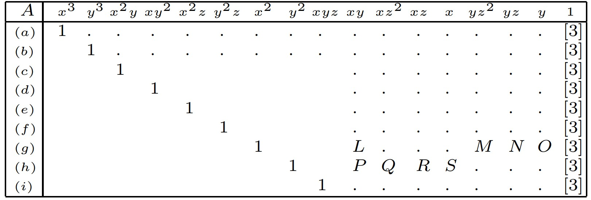

18. Efficient and Robust Large-Scale Rotation Averaging¶
本文的方法适用于 3D 旋转的李群结构，并通过两种方式解决了大规模鲁棒旋转平均的问题。
使用现代L1优化器对相对旋转进行稳健的平均，对于异常值（outliers）是相当有效的。
开发了一种两步法，它使用L1的解作为迭代重新加权最小二乘 (IRLS) 方法的初始化。
与BA调整相反，全局相机运动估计的另一种方法是平均相对运动。
在 SfM 的上下文中，运动平均利用了观察结果，即在一组 N 个图像中，存在多达 \(^N C_2 = \frac{N(N-1)}{2}\) ，使用其中2对可以估计相对运动。
可以通过称为视图图的图 \(G = {V,E}\) 来表示所有相机之间的关系，其中 \(V\) 中的每个顶点代表一个相机，边 \((i,j) \in \epsilon\) 意味着 可以估计相机 \(i\) 和 \(j\) 之间的运动。
如果相当于全局参考系，将第 \(k\) 个摄像机的绝对3D旋转表示为 \(R_k\) ，则相机 \(i\) 和 \(j\) 之间的相对旋转 \(R_{ij}\) 可以写成相机 \(i\) 和 \(j\) 的全局运动， 如下
所有 \(3 \times 3\) 旋转矩阵形成一个封闭群，称为特殊正交群 \(SO(3)\) ，
李群的一个重要性质是李代数和群之间存在直接映射，反之亦然。 这些映射分别是熟悉的指数和对数函数。 在 3D 旋转的情况下，李代数表示为 \(so(3)\) 。
如果表示 \(w = \theta n \in so(3)\) 其中 \(\theta\) 是绕单位范数轴 \(n\) 的旋转角度，那么李群和对应的 3D 旋转李代数之间的指数和对数映射为 \(R = e^{[w]_x} \in SO(3)\) 和 \([w]_x = log(R) \in so(3)\) 其中 \([w]_x \in so(3)\) 是 \(w\) 的偏对称形式。
SO(3)上的固有双不变度量， \(d(R_1,R_2) = \frac{1}{\sqrt{2}} ||log(R_1 R_2^{-1})||_F = \frac{1}{\sqrt{2}}||log(R_2 R_1 ^{-1})||_F\) 其中 \(||·||\) 是 Frobenius 范数。 这导致了一组旋转 {R1, … , Rn } 的 Frechet 均值或内在平均值 μ ∈ SO(3)，其定义为：
和估计平均旋转相似，可以使用内在距离（intrinsic distance）将全局或绝对旋转拟合到一组给定的相对旋转观测值。
如果相对于给定的参考系，我们将全局旋转定义为 \(R_{global} = \{R_1,R_2,···,R_N\}\) ，使用等式 \(R_{ij} = R_j {R_i}^{-1}\) 可以将全局旋转估计定义为：
如果考虑由边 \((i,j) \in E\) 表示的单个关系 \(R_{ij} = R_j R_i^{-1}\) ，则对应的李代数关系的一阶近似可以写成 \(w_{ij} = w_j - w_{i}\)
进一步将所有旋转的角度表示表示为 \(w_{global} = [w_1,···,w_N]^T\) 。 因此，可以写：
其中在 \(A_{ij}\) 中， \(I\) 和 \(-I\) 分别作为 \(3\times 3\) 块放置在 \(j\) 和 \(i\) 的适当位置。
上面的式子表示从 \(\epsilon\) 中的单个相对运动边缘获得的关系，可以将所有这些关系统一到一个方程组中，如：
其中 \(w_{rel}\) 是通过叠加所有相对旋转观测值 \(w_{ij}\) 得到的向量， \(A\) 是通过叠加相应的矩阵 \(A_{ij}\) 得到的。
- 算法 1
- 
在这种平均相对旋转的方法中，对于 \(\mathcal{E}\) 中的所有边，观测值 \(R_{ij}\) 与当前估计的相对旋转（全局估计） \(R_jR_i^{-1}\) 之间的差异，在李代数中被平均。
在平均估计之后，通过指数映射将李代数更新映射回旋转群来更新单个旋转。 可以进一步注意到，在李代数求平均之后，用于更新单个旋转的指数映射确保在每个点上，估计都在旋转流形上，即该算法为全局旋转提供了内在估计 \(R_{global}\) 。 我们还注意到，在实践中，任何相机的旋转都固定为 I，以消除 Rglobal 的规范自由度。
18.1. Rotation Averaging¶
如果特定的相对旋转是异常值，那么李代数中的 l2 平均值将导致错误的旋转估计。
使用稳健的李代数平均。 在这种情况下， \(R_{global}\) 的整体估计不受个别异常值的影响。 通过利用 l1 成本函数的凸优化的最新进展，我们可以在存在异常值的情况下实现准确性和可扩展性的双重目标。